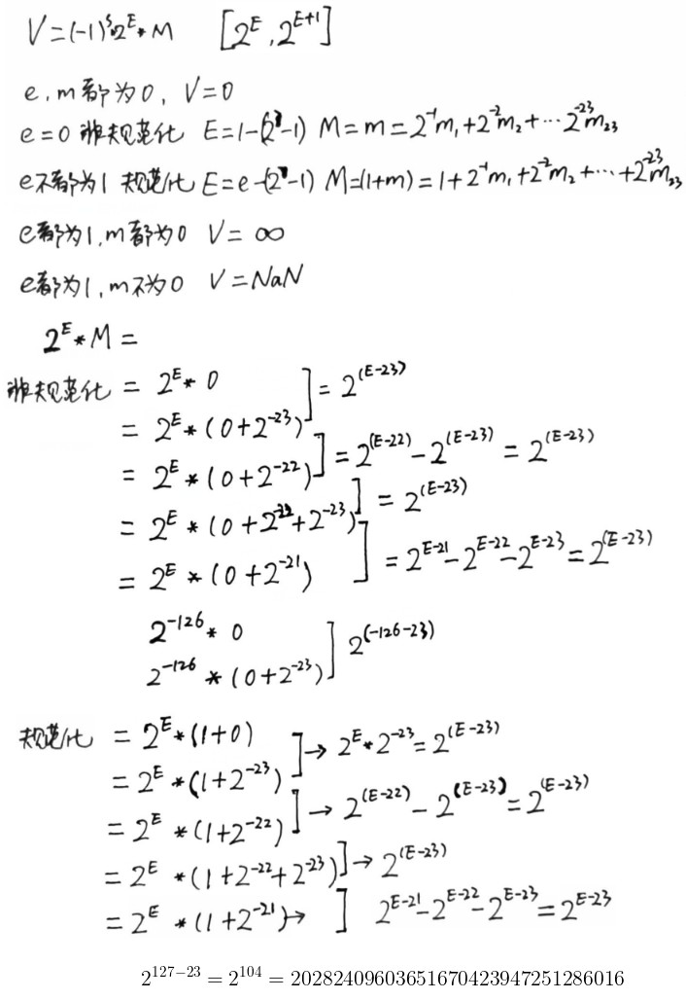
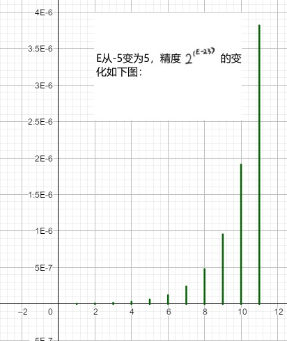
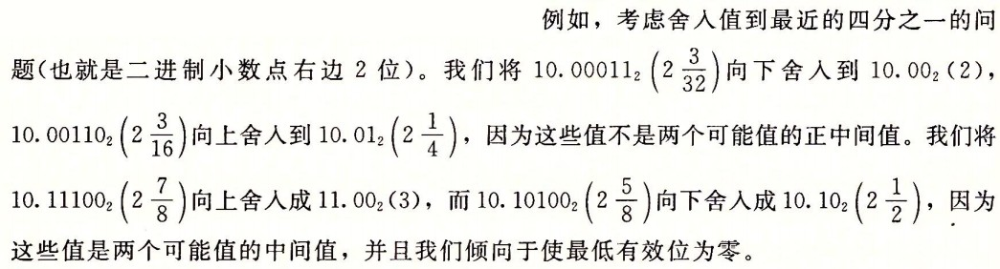
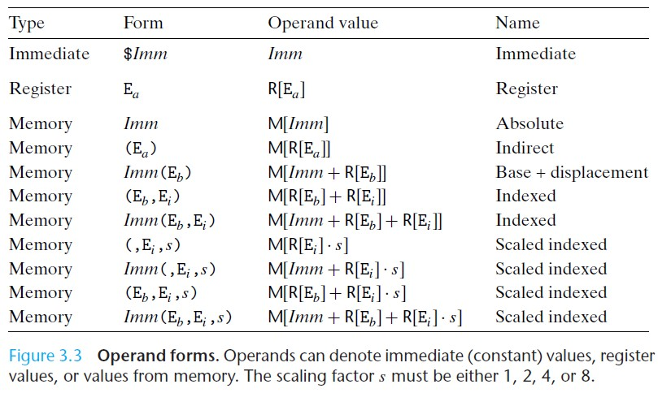

Computer System
Table of Contents
Computer System note.
<!– more –>
Computer System
参考资料
- 清华操作系统课程 github https://github.com/chyyuu/os_course_info
- 清华操作系统课程 https://blog.csdn.net/iwanderu/article/details/103934127
- 内存管理详细 https://www.cnblogs.com/peterYong/p/6556619.html
- 内存管理 http://www.cnblogs.com/CareySon/archive/2012/04/25/2470063.html
- 内存管理内幕 https://www.ibm.com/developerworks/cn/linux/l-memory/
Computer Systems: A Programmer's Perspective
第一部分程序结构和执行
2 信息的表示和处理
整数
该部分用到的一些记号说明如下：


有符号数和无符号数之间的转换

// 有符号数和无符号数之间的转换 //// 强制类型转换的结果保持位值不变，只是改变了解释这些位的方式。 short int v=-12345; unsigned short uv = (unsigned short) v; printf("v = %d, uv = %u\n", v, uv); // v = -12345, uv = 53191; // 扩展一个数字 short sx = -12345; // -12345 unsigned short usx = sx; // 53191 int x = sx; // -12345 unsigned ux = usx; // 53191 // 截断数字 int x = 53191; short sx = (short) x; // -12345 int y = sx; // -12345
移位运算
对于一个位表示为[X(w-1), X(w-2), ···, X(0)]的操作数 x：
左移操作：C 语言表达式 x<<k 会生成一个值，其位表示为[X(w-k-1), X(w-k-2), ···, X(0), 0, ···, 0]
逻辑右移操作：逻辑右移在左端补 k 个 0，结果为[X(w-k-1), X(w-k-2), ···, X(0), 0, ···, 0]
算术右移操作：算术右移在左端补 k 个最高有效位的值，结果为[X(w-1), X(w-1), ···, X(w-1), X(w-2), ···, X(k)]

整数的运算


上图展示了加减运算，即加减运算产生的溢出

上图展示了乘法运算

上图展示了除法运算
加法、减法、位级运算和移位只需要 1 个时钟周期
乘法指令在比较老的 CPU 上需要 10 个或者更多时钟周期(Intel Core i7 Haswell 上需要 3 个时钟周期)
除法指令在比较老的 CPU 上需要 30 个或者更多时钟周期.
可以将乘法转化为加法、减法、移位的组合，例如：
14 = 2^3 + 2^2 + 2^1 所以 x*14=(x<<3)+(x<<2)+(x<<1)
14 = 2^4 - 2^1 所以 x*14=(x<<4)-(x<<1)
任何一个整数都可以表示为 2 的幂次之和，所以乘法都可以转化为位移和加法操作。但是只有当乘法转化为少量的移位、加法和减法时，编译器才会执行这种转化，从而优化性能。
当一个整数为 2 的幂次时，可以将除该整数转化为位移操作。而整数不为 2 的幂次时，则无法像乘法那样转化为位移操作了。
浮点数
浮点数表示
下图展示了 IEEE 浮点数表示的规则：

下图展示了 8 位浮点数表示的示例：

下图展示了 32 位浮点数表示的示例：

浮点数表示的连续性，可以将浮点数的表示有一种更直观的理解：
e 间隔 1 的数落在 \([2^E, 2^{E+1})\) 范围内，并且这个范围内，两个相邻的浮点数的间隔为 \(2^{E-23}\) (以 float 为例)

浮点数精度值以指数变化，E越大精度越小，E越小精度越大(精度值为相邻浮点数之间的间隔)。e全 0 时，E最小（此时 float 类型对应的 E 为 1-126=-126），此时精度最大（此时 float 类型对应的精度为 \(2^{-126-23}=2^{-149}\) ）：

./ComputerSystem/float_precision_illustrate.ggb
- 浮点数象形表示法 https://zhuanlan.zhihu.com/p/138845520
- Floating Point Visually Explained https://fabiensanglard.net/floating_point_visually_explained/index.html
- 浮点数内存表示工具 https://www.h-schmidt.net/FloatConverter/IEEE754.html
舍入
舍入的一个关键问题是在两个可能值的中间如何确定舍入方向。IEEE 浮点格式定义了四种不同的舍入方式。
| 方式 | 1.40 美元 | 1.60 美元 | 1.50 美元 | 2.50 美元 | -1.50 美元 |
|---|---|---|---|---|---|
| 向偶数舍入 | 1 | 2 | 2 | 2 | -2 |
| 向零舍入 | 1 | 1 | 1 | 2 | -1 |
| 向下舍入 | 1 | 1 | 1 | 2 | -2 |
| 向上舍入 | 2 | 2 | 2 | 3 | -1 |
向偶数舍入也被称为向最接近的值舍入，其为默认的方式。给定值为两个可能值的中间值时，向偶数舍入将数字向上或者向下舍入，使得结果的最低有效数字为偶数。（例如：上面向偶数舍入将 1.5 和 2.5 都舍入为 2）
向偶数舍入应用于二进制数时，最低有效位的值为 0 认为是偶数，值为 1 认为是奇数。只有对于形如 XX···X.YY···Y100···0 的二进制位模式的数，这种舍入方式才有效（此时的值是精度范围内两个值的中间值，如 1.5 是 2 和 1 的中间值），其中 X 和 Y 表示任意位值，最右边 Y 是要被舍入的位置(精度截止到最右边的 Y)。例如：

浮点数运算
- 浮点数算术运算

下图展示了，浮点数加法运算时，舍入所导致的误差范围：

下图展示了，从浮点运算导出的一些结论：

- Error Propagation
下图展示了 Forward Error Analysis 和 Backword Error Analysis:

下图展示了对浮点计算误差的分析和定界：

- Running Error Analysis
除了通过代数的方法来得出误差范围，也可以让计算机为我们做这项工作，这种方式被称为 running error analysis.其背后的理念是，每次执行浮点运算时，同时计算累积到当前计算的误差范围。
具体的实现参考 ../graphics/PhysicallyBasedRendering.html#org539ab6d
- Misc
v>0 v/0 = Infinity
v<0 v/0 = -Infinity
v>0 v*Infinity = Infinity
v<0 v*Infinity = -Infinity
0*infinity = NaN
Infinity - Infinity = NaN
Infinity + Infinity = Infinity
NaN + v = NaN
NaN 和任意数字的比较都为 false
- 浮点数加法是可交换的。
- 浮点数加法不具有结合性（因为舍入或溢出）。
(3.14+1e10)-1e10 = 0
3.14+(1e10-1e10) = 3.14
1e10 是 C/C++规定的浮点数的科学计数写法,意思是 1.0x10 的 10 次方 - 浮点数加法满足单调性属性：如果 a>=b,那么对于任何 a、b 以及 x 的值，除了 NaN，都有 x+a>=x+b。
- 浮点数乘法是可交换的。
- 浮点数乘法不具有结合性（因为舍入或溢出）。
(1e20*1e20)*1e-20 为无穷大
1e20*(1e20*1e-20) 为 1e20 - 浮点乘法在加法上不具备分配性。
1e20*(1e20-1e20) = 0
1e20*1e-20-1e20*1e-20 = NaN - 浮点乘法满足下列单调性：对于任何 a、b、c,并且 a、b、c 都不为 NaN,浮点乘法满足
a>=b 且 c>=0 则 a*c>=b*c
a>=b 且 c<=0 则 a*c<=b*c
无符号或补码的乘法没有这些单调性属性，因为溢出时会取模。
- 浮点数加法是可交换的。
- Tips
本节内容部分来自 Physically Based Rendering_v3_en 3.9 节 Managing Rounding Error.
3 程序的机器级表示
机器级代码
机器级编码使用了两种抽象：
- 由指令集体系结构或指令集架构（Instruction Set Architecture, ISA）来定义机器级程序的格式和行为，它定义了处理器状态、指令的格式，以及每条指令对状态的影响。大多数 ISA 将程序的行为描述成好像每条指令都是按顺序执行的，一条指令结束后，下一条再开始。处理器硬件远比描述的精细复杂，它们并发执行许多指令，但是采取措施保证整体行为与 ISA 指定的顺序执行的行为完全一致。
- 机器级程序使用的内存地址是虚拟地址，提供的内存模型看上去是一个非常大的字节数组。存储器系统的实际实现是将多个硬件存储器和操作系统软件组合起来。
x86-64 的机器代码和原始 C 代码差别非常大。一些通常对 C 语言程序员隐藏的处理其状态都是可见的：
- 程序计数器（通常称为“PC”，在 x86-64 中用%rip 表示） 其给出将要执行的下一条指令在内存中的地址
- 整数寄存器文件 其包含 16 个命名的位置，分别存储 64 位的值。这些寄存器可以存储地址（对应于 C 语言的指针）或整数数据。有的寄存器被用来记录某些重要的程序状态，而其他的寄存器用来保持临时数据，例如过程的参数和局部变量，以及函数的返回值。
- 条件码寄存器 其保存着最近执行的算术或逻辑指令的状态信息。他们用来实现控制或数据流中的条件变化，比如说用来实现 if 和 while 语句。
- 一组向量寄存器 其可以存放一个或多个整数或浮点数值。
Code Example
// mstore.c long mult2(long, long); void multstore(long a, long b, long *c) { long t = mult2(a,b); *c = t; } // main.c void multstore(long, long, long *); int main() { long d; multstore(2,3,&d); return 0; } long mult2(long a, long b) { long c = a*b; return c; }
# 执行下面命令对程序进行编译生成 prog.exe程序 gcc -Og -o prog.exe main.c mstore.c # 执行下面命令，将二进制机器码prog.exe转化为字符表示的机器码 objdump -d prog.exe > asm-code.txt
//0000000000401550 <main>: 401550: 48 83 ec 38 sub $0x38,%rsp 401554: e8 f7 00 00 00 callq 401650 <__main> 401559: 4c 8d 44 24 2c lea 0x2c(%rsp),%r8 40155e: ba 03 00 00 00 mov $0x3,%edx 401563: b9 02 00 00 00 mov $0x2,%ecx 401568: e8 13 00 00 00 callq 401580 <multstore> 40156d: b8 00 00 00 00 mov $0x0,%eax 401572: 48 83 c4 38 add $0x38,%rsp 401576: c3 retq //0000000000401577 <mult2>: 401577: 89 c8 mov %ecx,%eax 401579: 0f af c2 imul %edx,%eax 40157c: c3 retq 40157d: 90 nop 40157e: 90 nop 40157f: 90 nop //0000000000401580 <multstore>: 401580: 53 push %rbx // save %rbx 401581: 48 83 ec 20 sub $0x20,%rsp // 401585: 4c 89 c3 mov %r8,%rbx // copy dest to %rbx 401588: e8 ea ff ff ff callq 401577 <mult2> // call mult2 40158d: 89 03 mov %eax,(%rbx) // store result at *dest 40158f: 48 83 c4 20 add $0x20,%rsp // 401593: 5b pop %rbx // restore %rbx 401594: c3 retq // return 401595: 90 nop 401596: 90 nop 401597: 90 nop 401598: 90 nop 401599: 90 nop 40159a: 90 nop 40159b: 90 nop 40159c: 90 nop 40159d: 90 nop 40159e: 90 nop 40159f: 90 nop
数据格式
一开始的 CPU 是 16 位的，因此把 16 位称为字，后来，32 位称为双字，64 位称为 4 字。
下面为 c 语言数据类型在 x86-64 中的大小：
| c | Intel 数据类型 | 汇编代码后缀 | 字节大小 |
|---|---|---|---|
| char | 字节 | b | 1 |
| short | 字 | w | 2 |
| int | 双字 | l | 4 |
| long | 四字 | q | 8 |
| char* | 四字 | q | 8 |
| float | 单精度 | s | 4 |
| double | 双精度 | l | 8 |
下图展示 x86-64 架构 CPU 的寄存器：

机器指令
下表展示了操作数格式

| 指令 | 英文 | 效果 | 描述 |
|---|---|---|---|
| movq S, D | move | D<-S | 传送 4 字节 |
| leaq S, D | load effective address | D<-&S | 加载有效地址 |
假设整型数组 E 的起始地址和整数索引 i 分别存放在寄存器 %rdx 和 %rcx 中，对数组操作的 c 代码，以及对应汇编代码如下：
| c | 类型 | 值 | 汇编代码 |
|---|---|---|---|
| E | int* | xe | movq %rdx,%rax |
| E[0] | int | M[xe] | movl (%rdx),%rax |
| E[i] | int | M[xe+4i] | movl (%rdx,%rcx,4),%eax |
| &E[2] | int* | xe+8 | leaq 8(%rdx),%rax |
| E+i-1 | int* | xe+4i-4 | leaq -4(%edx,%ecx,4),%eax |
| *(E+i-3) | int* | M[xe+4i-12] | movl -12(%3dx,%ecx,4),%eax |
| &E[i]-E | int | i | movl %ecx,%eax |
数据对齐
对齐数据可以提高内存系统的性能。对齐原则是任何 K 字节的基本对象的地址必须是 K 的倍数。
| K | 类型 |
|---|---|
| 1 | char |
| 2 | short |
| 4 | int,float |
| 8 | long,double,char* |
结构体中每个元素都需要满足自己的对齐要求。如下面结构体中为了保证元素 d 数据对齐，在元素 c 后填充 7 个空字节
struct S1 { char c; // 偏移 0，按1字节对齐，c后填充7个空字节 double d; // 偏移8，按8字节对齐 int i; // 偏移16，按4字节对齐 char c1; // 偏移20，按1字节对齐 }
编译器会在 struct 的末尾填充一些空字节，这样 struct 数组中的每个元素都可以满足对齐要求。
struct S2 { char c; // 偏移 0，按1字节对齐，c后填充7个空字节 double d; // 偏移8，按8字节对齐 char c1; // 偏移16，按1对齐，c后填充7个空字节，结构体整体按照24字节对齐 }
Tips:
数据没对齐时，某些型号的 Intel 和 AMD 处理器对于有些实现多媒体操作的 SSE 指令（Stream SIMD Extensions），无法正确执行。这些指令对 16 字节数据块进行操作，在 SSE 单元和内存之间传送数据的指令要求内存地址必须是 16 的倍数。
c++11 中的 alignof 关键字可用于得到一个类型的对齐大小。
struct S3 { char c; double d; char c1; } printf("S3 alignment = %d\n", alignof(A));
- 结构体成员内存对齐问题 https://imzlp.com/posts/61962/